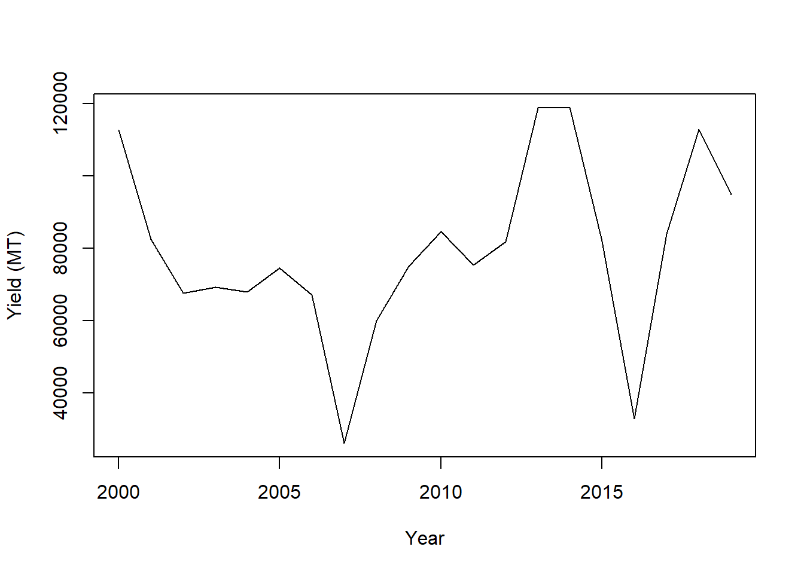
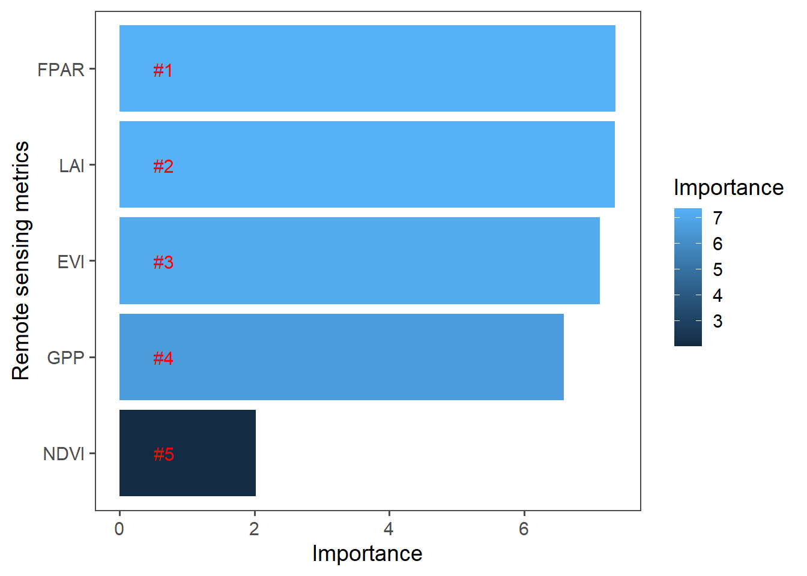
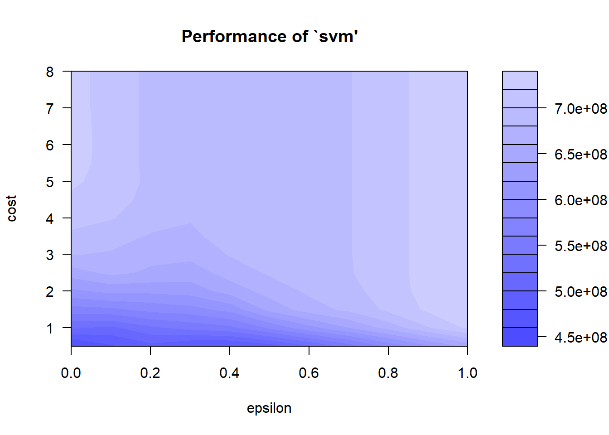

library(knitr)
opts_chunk$set(tidy.opts = list(width.cutoff = 60))Maize yield information from FAOSTAT is used in this section to design a model for yield prediction based on remotely sensed Z-scored spatial-temporal indices computed previously.
Load necessary packages and data (MODIS indices and reference yields).
rm(list = ls(all=TRUE))
unlink(".RData")
library(dplyr)
library(reshape2)
root <- root <- 'D:/JKUAT/RESEARCH_Projects/Eswatini/Data/'
filename <- paste0(root, "MODIS/outputs/2000_2020_MODIS_st_indices.rds")
#Indices
index <- readRDS(filename)
index <- as.data.frame(index)
filename <- paste0(root, "Yields/FAOSTAT_SZ_maize_yield.csv")
#Yields
ref <- read.csv(filename, stringsAsFactors = F)
temp <- ref[ref$Year >= 2000 & ref$Unit == "tonnes", c("Year","Value")]
colnames(temp)[2] <- "Yield_tonnes"Merge yield refence data with satellite indices for model training.
df <- merge(index,temp, by="Year")
knitr::kable(df,align = "l")| Year | NDVI | EVI | FPAR | LAI | GPP | Yield_tonnes |
|---|---|---|---|---|---|---|
| 2000 | 0.7411606 | 0.4212527 | NA | NA | 0.4953546 | 112779 |
| 2001 | 0.2562051 | -0.0524735 | NA | NA | 0.1678476 | 82536 |
| 2002 | -0.8384683 | -0.6522269 | NA | NA | -0.0020507 | 67639 |
| 2003 | -0.4130928 | -0.2029017 | -0.0499667 | -0.1897696 | -1.3033065 | 69273 |
| 2004 | 0.3985244 | -0.1499997 | -0.3330661 | -0.4115298 | -0.5767296 | 68087 |
| 2005 | 0.5200565 | 0.3024980 | 0.0452522 | 0.1304741 | -0.2504898 | 74540 |
| 2006 | 0.0471496 | 0.6077305 | 0.5025639 | 0.4582647 | 0.6186566 | 67127 |
| 2007 | -1.2828916 | -1.0719244 | -0.7466142 | -0.9988909 | -1.3969325 | 26170 |
| 2008 | -0.4744662 | -0.9791409 | -0.9984130 | -1.0110070 | -0.4620659 | 60012 |
| 2009 | 0.7286867 | 0.3894363 | 0.0913193 | 0.1342706 | 0.3988854 | 75068 |
| 2010 | 0.3278463 | 0.5995387 | -0.0228007 | 0.0389736 | 0.2838685 | 84685 |
| 2011 | 1.3804522 | 0.3092396 | 0.2728595 | 0.8178207 | -0.2355459 | 75418 |
| 2012 | 0.2716715 | 0.3085555 | 0.3331407 | 0.0599877 | -0.0508391 | 81934 |
| 2013 | 0.7041746 | 0.5348404 | 0.9638229 | 0.9420392 | 0.4789121 | 118871 |
| 2014 | 0.4316308 | 0.7035212 | 0.8211876 | 0.9991961 | 1.5665477 | 119000 |
| 2015 | -1.0552476 | -0.5846196 | -0.2758198 | -0.2954577 | -0.3370502 | 82000 |
| 2016 | -3.1728263 | -3.5066937 | -3.3533974 | -3.1888528 | -2.5380942 | 33000 |
| 2017 | 0.0503048 | 0.3766478 | 0.8494430 | 0.8072019 | 2.2484281 | 84000 |
| 2018 | -0.1531849 | 0.5785767 | 0.4927239 | 0.3289629 | 0.2613869 | 113000 |
| 2019 | 0.2521144 | 1.1465457 | 0.7457823 | 0.7345936 | 0.6511760 | 95000 |
Is there any trends and relationship between predictors and response variables?
Let us make some trend plots from the data:
plot(Yield_tonnes~Year, data=df, xlab="Year", ylab = "Yield (MT)", type='l')
Is there any relationship between for instance NDVI and maize yield in metric tones per hectare?
par(mfrow=c(2,2), mai=c(0.75,0.75,0.1,0.1))
plot(Yield_tonnes~NDVI, data=df, pch=16, ylab= "Yield(MT)", xlab="NDVI", cex=0.9, cex.axis=1.2, cex.lab=1.2)
plot(Yield_tonnes~EVI, data=df, pch=16, ylab= "Yield(MT)", xlab="NDMI", cex=0.9,cex.axis=1.2, cex.lab=1.2)
plot(Yield_tonnes~GPP, data=df, pch=16, ylab= "Yield(MT)", xlab="GPP", cex=0.9, cex.axis=1.2, cex.lab=1.2)
plot(Yield_tonnes~FPAR, data=df, pch=16, ylab= "Yield(MT)", xlab="FPAR", cex=0.9, cex.axis=1.2, cex.lab=1.2)Relationship between maize yields and satellite metrics.
We will use random forest to check the significance of the satellite indices for maize yield prediction.
library(randomForest)## randomForest 4.6-14## Type rfNews() to see new features/changes/bug fixes.##
## Attaching package: 'randomForest'## The following object is masked from 'package:dplyr':
##
## combinetrain <- df
data <- na.omit(df)
rf = randomForest(Yield_tonnes~., data=data[, -1], importance=TRUE, ntree = 500)
importance <- importance(rf)
importance## %IncMSE IncNodePurity
## NDVI 2.023014 1598126228
## EVI 7.126598 1709219119
## FPAR 7.355854 1753478416
## LAI 7.348654 1896365793
## GPP 6.589853 1772987638rf##
## Call:
## randomForest(formula = Yield_tonnes ~ ., data = data[, -1], importance = TRUE, ntree = 500)
## Type of random forest: regression
## Number of trees: 500
## No. of variables tried at each split: 1
##
## Mean of squared residuals: 363342792
## % Var explained: 40.22varImportance <- data.frame(Variables = row.names(importance),
Importance = round(importance[ ,'%IncMSE'],2))
#Create a rank variable based on importance
rankImportance <- varImportance %>%
mutate(Rank = paste0('#',dense_rank(desc(Importance))))
#Use ggplot2 to visualize the relative importance of variables
library(ggthemes)
library(ggplot2)##
## Attaching package: 'ggplot2'## The following object is masked from 'package:randomForest':
##
## marginggplot(rankImportance, aes(x = reorder(Variables, Importance),
y = Importance, fill = Importance)) +
geom_bar(stat='identity') +
geom_text(aes(x = Variables, y = 0.5, label = Rank),
hjust=0, vjust=0.55, size = 4, colour = 'red') +
labs(x = 'Remote sensing metrics') +
coord_flip() +
theme_few(base_size = 14)
From Figure @ref(fig:m3) there seems to be some relationship i.e. yields increases with increase in vegetation indices So let us predict 2020 yields using 2003-2019 indices and reference yields.
train <- data[data$Year <= 2013, ] #Training data
newdata <- data[data$Year > 2013, ]
#poly model
train <- train[, -1]
p.lm <- lm(Yield_tonnes~., data=train)
summary(p.lm)##
## Call:
## lm(formula = Yield_tonnes ~ ., data = train)
##
## Residuals:
## 4 5 6 7 8 9 10 11
## 10989.8 -3511.2 166.7 -14191.8 -12235.2 12032.8 -9583.4 14509.2
## 12 13 14
## -7459.9 -5831.1 15114.0
##
## Coefficients:
## Estimate Std. Error t value Pr(>|t|)
## (Intercept) 70736 6902 10.249 0.000152 ***
## NDVI 20383 16814 1.212 0.279552
## EVI -11609 23716 -0.490 0.645201
## FPAR 51831 38814 1.335 0.239320
## LAI -30351 38508 -0.788 0.466299
## GPP 7334 12361 0.593 0.578817
## ---
## Signif. codes: 0 '***' 0.001 '**' 0.01 '*' 0.05 '.' 0.1 ' ' 1
##
## Residual standard error: 15810 on 5 degrees of freedom
## Multiple R-squared: 0.7379, Adjusted R-squared: 0.4758
## F-statistic: 2.815 on 5 and 5 DF, p-value: 0.1403#Random Forest model
rf = randomForest(Yield_tonnes~., data=train, importance=TRUE, ntree = 500)
importance(rf)## %IncMSE IncNodePurity
## NDVI 3.775943 760541215
## EVI 4.924809 664381150
## FPAR 4.038208 953335597
## LAI 3.036205 655371315
## GPP 4.337149 796134782rf##
## Call:
## randomForest(formula = Yield_tonnes ~ ., data = train, importance = TRUE, ntree = 500)
## Type of random forest: regression
## Number of trees: 500
## No. of variables tried at each split: 1
##
## Mean of squared residuals: 398422113
## % Var explained: 8.06#SVM https://rstudio-pubs-static.s3.amazonaws.com/280840_d4fb4f186d454d5dbce3ba2cbe4bbcdb.html#tune-svm-regression-model
library(e1071)
svm = svm(Yield_tonnes~., data=train, kernel="radial")
svm##
## Call:
## svm(formula = Yield_tonnes ~ ., data = train, kernel = "radial")
##
##
## Parameters:
## SVM-Type: eps-regression
## SVM-Kernel: radial
## cost: 1
## gamma: 0.2
## epsilon: 0.1
##
##
## Number of Support Vectors: 9#tune result
tuneResult <- tune(method="svm", Yield_tonnes~., data = train, ranges = list(epsilon = seq(0,1,0.1), cost = (seq(0.5,8,.5))), kernel="radial"
)
tuneResult##
## Parameter tuning of 'svm':
##
## - sampling method: 10-fold cross validation
##
## - best parameters:
## epsilon cost
## 0 0.5
##
## - best performance: 455161619plot(tuneResult)
From the SVM tuning graph we can see that the darker the region is the better our model is (because the RMSE is closer to zero in darker regions).
We can use the Root Mean Square Error (RMSE) and mean absolute percentage error (MAPE) to evaluate the models accuracies. RMSE is given as:
\[ \text{RMSE} = \sqrt{\frac{1}{n} \sum_{i=1}^n \widehat{y}-y}, \] where \(\widehat{y}\) and \(y\) are predicted yields and observed yields respectively while n is the number of fitted points.
rmse <- function(error){
sqrt(mean(error^2))
}MAPE is given as:
\[ \text{MAPE} = \frac{100\%}{n} \sum_{i=1}^n |\frac{y-\widehat{y}}{y}|. \] In R we can write it as:
MAPE <- function (y_pred, y_true){
MAPE <- mean(abs((y_true - y_pred)/y_true))
return(MAPE*100)
}Let us predict maize yields in the years we left out using the indices based on the model.
lm_y <- predict(p.lm, newdata[,-c(1,7)])
rf_y <- predict(rf, newdata[,-c(1,7)])
svm_y <- predict(svm, newdata[,-c(1,7)])
svm_tuned <- predict(tuneResult$best.model, newdata[,-c(1,7)])Compute rmse of our predictions.
observed_y <- newdata[, "Yield_tonnes"]
#RMSE from LOESS
rmse(observed_y-lm_y)## [1] 41067MAPE(observed_y, lm_y)## [1] 56.53507#RMSE from random Forest
rmse(observed_y-rf_y)## [1] 20048.64MAPE(observed_y, rf_y)## [1] 22.38854#RMSE from SVM not tuned
rmse(observed_y-svm_y)## [1] 30644.81MAPE(observed_y, svm_y)## [1] 40.20859#RMSE for tuned SVM
rmse(observed_y-svm_tuned)## [1] 31383.96MAPE(observed_y,svm_tuned)## [1] 40.74543So we choose a model with the lowest RMSE and MAPE and subsequently use it to predict yields in 2020. It also obvious that we would be better off with a high enough data sample. In this case RF model did better and we can use it.
rf <- randomForest(Yield_tonnes~., data=na.omit(df[,-1]), importance=TRUE, ntree = 500)
newdata <- index[index$Year==2020, ]
rf_y <- predict(rf, newdata)
rf_y## 21
## 92500.98The predicted maize yield for the year 2020 is 94010.84 tonnes.
Created 14th May 2021 Copyright © Benson Kenduiywo, Inc. All rights reserved.